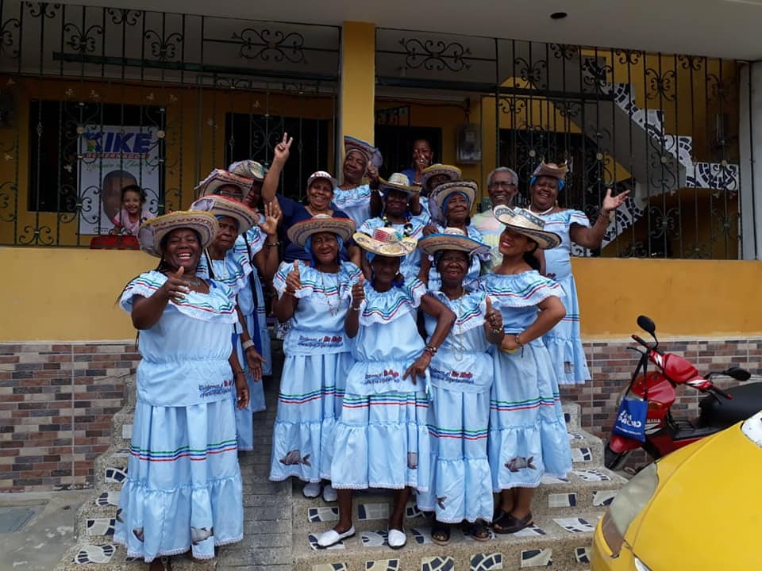

el
COLOMBIANO

Los abuelos de Quibdo
Abuelos más reconocidos del municipio
Niñez de los abuelos
Juventud de los abuelos
Fotos de matrimonio
Hijos de los abuelos
Momentos felices y tristes de la familia